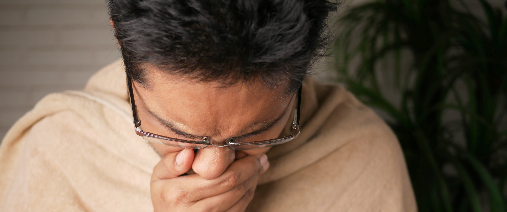

Simulating tuberculosis
Made by Marc Fajardo 2022
The Nature of Tuberculosis
Dr. Robert Koch announced the existence of Mycobacterium tuberculosis, the bacteria that causes tuberculosis, back on March 24, 1882. TB was such a dangerous illness that it killed 1 out of 7 individuals in America and Europe.
TB was the third leading cost of death in 2020 and the second leading infectious killer after COVID-19, with 1.5 million deaths in 2020.
Tuberculosis is a disease that can spread from person to person through the air. When a person with TB coughs, speaks, sneezes, sings or breathes . The germs from the infected individual can stay in the air for several hours.
Individuals with HIV are much more vulnerable to tuberculosis . Young people and individuals with malnutrition are known to be vulnerable as well. Other factors that also affect the relationship of TB to the person are diabetes, indoor air pollution, alcohol, tobacco smoke, and immunosuppressive drugs. Healthcare workers and the indigenous population have increased vulnerabilities as well. The delay between the diagnosis of TB and the duration of transmission by the infected person also has a substantial effect.
Getting infected with TB doesn't automatically mean that you will automatically experience symptoms and start infecting other people. TB can lay dormant and may develop or activate later on . This means that it is also important to be able to detect individuals with Latent TB infection for prevention.
Detecting TB is paramount to start the proper medication for an infected individual or a person who has symptoms or to start tracing individuals who were in contact with the person.
Vaccination
The Bacille Calmette-Guérin (BCG) vaccine was developed in 1921 by Albert Calmette and Jean-Marie Camille Guerin. The use of the vaccine, however, is only recommended for children and health care workers in countries where TB is much more common. Individuals with HIV or who are pregnant are also not recommended to have the vaccine. This is because there are potential problems that the vaccine can cause without proper consultation with an expert. Low risk of infection with the bacteria on the vaccination, variable effectiveness of the vaccine on pulmonary TB, and potential interference of skin tests for TB. This is why the vaccine is only recommended to certain demographics who are qualified to need it and potentially have better pros with the vaccine.Medication/Treatment
Today, there are four drugs used to treat TB disease, namely: isoniazid (1951), pyrazinamide (1952), ethambutol (1961), and rifampin (1966). This 4-drug cocktail is still the widely used treatment for drug-susceptible TB.Medication should be taken for around 6-12 months depending on the professional. The schedule for taking the treatment should always be followed to avoid the cases of being sick again, or worse, the bacteria become drug-resistant to those medications. Drug-resistant TB would then need harsher or more toxic treatments to remove it.
Setup of the Simulation and Properties of the Disease
Simulation Properties
Ticks
Each tick in the simulation is equivalent to 1 hour, 24 ticks for a day, 24*30 for a month.
Agents
There are 10-350 agents that the user can create, each moving randomly in the field
Starting infected with active tb is calculated by: Selected number of population * (%starting-infected / 100)
- Agents have the states: sick?, dormant?, dead?, isolate?, diagnosed?, takemeds?, and sick-tb-resist?
- not sick? not dormant? are healthy (green)
- sick?:(red) The agent has active tuberculosis, has %cough (chance to cough, which changes the current patch to yellow and may infect other not sick? and not dormant? agents) per tick
- dormant?:(yellow) The agent has latent tuberculosis. (infected by the cough patches from sick?) dormant? agents have 'dormant-to-active' slider in months for the dormant tb to become active, dormant? cannot infect other agents
- dead?: The agent died due to being sick?
- isolate?: These individuals are hidden from the world and are isolating, only sick? agents can isolate and therefore cannot infect other agents.
- diagnoesd?: sick? and dormant? can be diagnosed to tb, once successfully diagnosed, agents can now start medication to recover
- takemeds?: once started to take medication, agents have a chance to stop taking meds depending on %willingness-to-continue-medication
- sick-tb-resist?: on skipping meds, tb has a chance to be resistant to medication, dooming the sick? or dormant?, this simulation does not spread drug-resistant tb
Coughs
- Coughs come from agents who are sick? and have %cough chance to cough per tick/hour.
- Agents being on the patch with cough (yellow patch) have %infectiousness to get dormant? status
- Cough duration in patch depends on air-contamination-duration, after which the yellow patch becomes black again
- sick? agents have %death chance to die unless taking medication
Time while dormant? or under meds
- Once dormant, agents have dormant-to-active number of months until the agent becomes sick?, unless diagnosed and then given medication
- Active TB with medication depends on active-to-healthy-with-medication, dormant TB with medication depends on dormant-to-healthy-medication
Willingness to get tested
- sick? agents have %willingness-active-tb chance to get tested for tb
- normal or dormant? agents have %willingness-no-symptoms chance to get tested for tb
- when undergoing testing, agents have a chance to be successfully diagnosed based on %ability-to-detect-tb, otherwise they remain undetected
- Testing frequency depends on the number of days on days-interval-for-testing-tb
Willingess to continue taking medicine
- Agents, once diagnosed, takes meds continuously until recovery depending on %willingness-to-continue-medication, agents cannot die if continuously taking meds
- Once stopping medication, sick? agents have a chance to die, also chance of developing sick-tb-resist? depends on %chance-resistant-to-meds-on-skip
- Agents after recovery time with medication, become healthy
Willingness to isolate
- Once diagnosed?, agents have a chance to isolate and not be on the worldmap depending on %willingness-to-isolate, only sick? agents are isolated since dormant? cannot infect
Immune System
- Agents that have latent tb 'dormant?', when not diagnosed? or not takemeds?, may eventually become sick after dormant-to-active, %immune-system-fighting-latent-tb chance is the ability to fight off dormant? tb, instead of becoming sick?, agent becomes healthy
Recognizing deaths in the population
- %effect-of-deaths-to-willingness affects overall willingness of agents depending on the percentage of death in the population
- Formula: willingness-due-to-deaths is added to all willingness chances in the code (willingness-due-to-deaths = dead / population * %effect-of-deaths-to-willingness)
The Simulation
Discussion
Simulation Events
Standard Simulation
- Standard simulation only involves %cough, %infectiousness, %death, air-contamination-duration, and dormant-to-active
- All latent tb infected will always become sick, sick individuals will always die and potentially infect others. Many will survive depending on variables presented above. As sick? agents may die without infecting other agents
With active tb testing and medication
- Includes: %willingness-active-tb, active-to-healthy-with-medication, %ability-to-detect-tb, %willingness-to-continue-medication
- Even with good values in all new included variables, simulation found it difficult to sustain the society. Sick people become healthy for sure, but almost always becomes latent cases, bringing in more sick agents, no isolation means sick agents that are diagnosed can still infect healthy agents.
With no symptoms testing and medication (expensive amount of tests)
- Includes: %willingness-no-symptoms,
- Successful simulations with good %willingness-no-symptoms, assuming they continue medication to recover, it is very expensive however, testing many times
Testing success chances and frequency
- Includes:days-interval-for-testing-tb
- By default, testing chances happen every 24ticks/1day, can change this until 31 days, on an ideal world, the more tests the better. The expenses and logistics are realistically a nightmare however.
With chances of drug-resistant-tb
- Includes: %chance-resistant-to-meds-on-skip
- Once the bacteria develops resistance, sick? agents will infect and die, so the %chance is very sensitive
With willingness to isolate
- Includes:%willingness-to-isolate
- Even when there is only a small chance of isolation, there are many healthy agents that are saved in comparison to it not existing.
- When in isolation, they still have a chance to die based on medication, but will no longer infect other people
With immune-system calculation (for dormant tb)
- Includes: %immune-system-fighting-latent-tb
- This gives better chances to survive tb, immune systems when strong have a chance to not develop into active tb
- Even without medication implemented, some latent tb or dormant? state agent becomes healthy
- The stronger the immune system, the likelihood of becoming sick? becomes less, the likelihood of becoming healthy becomes more, even without meds and diagnosis
Recognizing deaths
- Includes:%effect-of-deaths-to-willingness
- Being affected or feeling the urgency depending on the amount of deaths witnessed in the population is grounded to reality
- The slider however can become sensitive as even slight adjustments can increase isolation, medication, and testing. Which improve overall turnouts in the simulation
Key Insights
Insights
Chances of dying per hour
- Even with small chances of death, rolling the dice per hour increases the likelihood. Therefore a different calculation for %death may be needed
Willingness calculations
- Willingness odds are very important in understanding agent decisions. Realistically, only agents with symptoms will have bigger chances of wanting to get tested.
Continuing medication chances
- With drug-resistant tb being dangerous in this simulation, continuing medication chances are very crucial. Even around 90% is already dangerous, as one skip can cause resistance based on the other chances
- This is very important as it is being tested the whole duration of the assigned recovery time
Not dying while on meds
- Realistically, there should be different chances of death even under medication or isolation. This simulation makes it so that when using the medication continously, the agent will not die.
Not spreading drug-resistant tb, or not having harmful medication to agents with drug-resistant tb
- Realistically, once you develop drug-resistant tb, other agents infected by you should also get drug-resistant tb, this is not however the case for the simulation.
Immune System, depending on agent statuses, (with hiv, smoker, alcoholic, diabetes, others)
- Varying immune system levels in the society should make the simulation better, having uniform immune system may not be accurate and will not reflect or instantiate situations where agents also have other complications aside from tb.
Recognizing death, better formula, or choice to only apply to certain willingness chances
- There should be a better calculation for recognizing death which translates into willingness to isolate, medicate, and get tested
- Willingness effect should also be adjustable by the user as to what types of willingness it will touch.
References
- de Espíndola, A. L., Bauch, C. T., Troca Cabella, B. C., & Martinez, A. S. (2011). An agent-based computational model of the spread of tuberculosis. Journal of Statistical Mechanics: Theory and Experiment, 2011(05), P05003. https://doi.org/10.1088/1742-5468/2011/05/p05003
- Narasimhan, P., Wood, J., MacIntyre, C. R., & Mathai, D. (2013). Risk Factors for Tuberculosis. Pulmonary Medicine, 2013, 1–11. https://doi.org/10.1155/2013/828939
- NHS website. (2022, March 2). Treatment. Nhs.Uk. https://www.nhs.uk/conditions/tuberculosis-tb/treatment/
- Prats, C., Montañola-Sales, C., Gilabert-Navarro, J. F., Valls, J., Casanovas-Garcia, J., Vilaplana, C., Cardona, P. J., & López, D. (2016). Individual-Based Modeling of Tuberculosis in a User-Friendly Interface: Understanding the Epidemiological Role of Population Heterogeneity in a City. Frontiers in Microbiology, 6. https://doi.org/10.3389/fmicb.2015.01564
- Tuberculosis (TB) - Latent TB Infection and TB Disease. (2020, December 11). Centers for Disease Control and Prevention. https://www.cdc.gov/tb/topic/basics/tbinfectiondisease.htm
- Turner, R. D., & Bothamley, G. H. (2014). Cough and the Transmission of Tuberculosis. The Journal of Infectious Diseases, 211(9), 1367–1372. https://doi.org/10.1093/infdis/jiu625
- World TB Day History. (2022, January 14). Centers for Disease Control and Prevention. https://www.cdc.gov/tb/worldtbday/history.htm#:%7E:text=The%20earliest%20written%20mentions%20of,occurred%20in%20the%20United%20States.